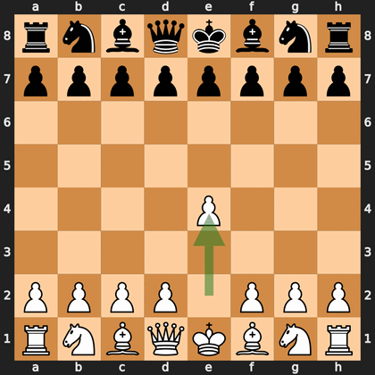

Февруари 1996 г., Филаделфия. Световният шампион Гари Каспаров играе срещу компютъра Deep Blue на IBM. Машината печели първата партия: за първи път компютър бие действащ световен шампион в партия с класически контрол на времето. Но Каспаров печели мача с 4:2.
Екипът на IBM подобрява машината и през май 1997 г. в Ню Йорк идва реваншът. Този път Deep Blue печели с 3½:2½.
Deep Blue проверява около 200 милиона позиции в секунда. Оценката на позициите е разработена с помощта на гросмайстори, а за началото и края на партията има готови бази данни. Той не се учи от собствените си партии.

Решаващата шеста партия трае само 19 хода. Каспаров прави грешка в дебюта, а Deep Blue веднага я наказва с жертва на кон. След 19.c4 Каспаров се предава.
Deep Blue показва силата на бързото търсене, съчетано с човешко знание.